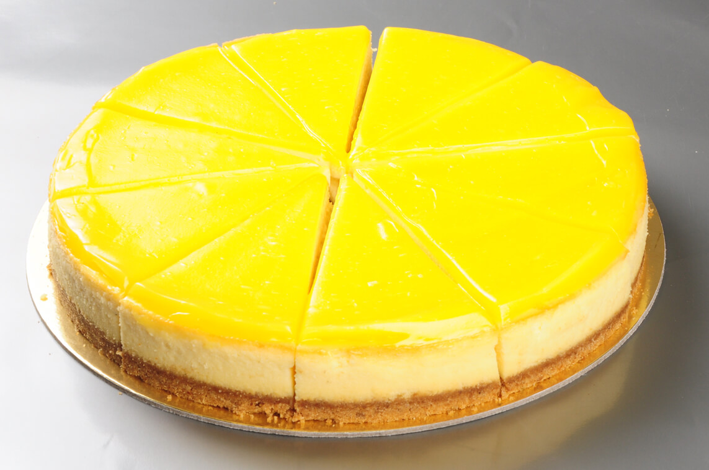

Limonlu Cheescake Tarihi
Cheesecake’in 4 bin sene önce bile yendiğine inanılır, hatta ilk cheesecake tarifi 236 yılında yapılmıştır.
Yunanlar cheesecake’i bir enerji kaynağı olarak görür, hatta olimpiyatlarda atletlere, yani sporculara cheesecake yedirilirdi.
776 yılında sporculara cheesecake yedirildiğine dair kanıtlar var.
Bununla beraber cheesecake, Yunan gelinlerin düğün pastası da olarak kullanılırdı.

Tarif Aşaması
Tabanı İçin;
- 1 paket burçak bisküvi
- 1 su bardağı fındık (opsiyonel)
- 50 gram tereyağı veya margarin
Kreması İçin;
- 300 gram labne peyniri
- 1 buçuk su bardağı süzme yoğurt
- 3 adet yumurta (büyük ise 2 adet)
- 1 su bardağı şeker
- 1 paket vanilya
- 3 silme yemek kaşığı un
- Yarım yemek kaşığı mısır nişastası
- 1 limonun kabuğu
- Yarım limonun suyu
Limonlu Sos İçin;
- 1 çay bardağı süt
- 1 çay bardağı su
- Yarım çay bardağı limon suyu (1 limondan çıkıyor)
- 2 buçuk silme yemek kaşığı nişasta
- 4-5 yemek kaşığı şeker (Kendinize göre ayarlayabilirsiniz)
- Limon kabuğu rendesi (opsiyonel)
- 1 paket vanilya
Cheescake Yapım Aşamaları
- Öncelikle burçak ve fındıkları rondodan un gibi olana kadar geçirin.
- Cezvede erittiğiniz tereyağını bu una ekleyin ve kaşıkla ya da elinizle karıştırıp kelepçeli kalıbınızın dibine dökün.
- Elinizle tüm tabanı kaplayacak şekilde düzeltin.
- Kreması için tüm malzemeler oda sıcaklığında olmalı.
Labne ve süzme yoğurdu geniş bir kapta “mikserin en düşük devrinde” çırpın.
- Şekeri ekleyin ve biraz daha çırpın. (Tüm çırpma işlemleri düşük devirde olacak).
Yumurtaları tek tek ekleyin. İlk yumurtayı ekleyin ve karışım iyice bütünleşince diğerini ekleyin.
- Yumurtalar bitene kadar bu şekilde devam edin.
- Limon kabuğunu ve suyu, nişasta, vanilya ve unu da ekleyip biraz daha çırpın.
- Ve karışımı kelepçeli kalıba, bisküvilerin üzerine dökün.
- Kelepçeli kalıbı dikkatlice tezgaha 1-2 kez vurun ki çırpma esnasında oluşan hava kabarcıkları patlasın ve çatlama yapmasın.
- Kelepçeli kalıbı folyo ile kaplayın. (Dış duvarlarını ve altını, resimde daha iyi anlaşılacaktır)
- Fırın tepsinize tabanı kaplayacak kadar kaynar su dökün.
- Ve kelepçeli kalıbı kaynar sulu tepsiye oturtun.
- Önceden ısıtılmış fırında 165 derece 45-55 dakika arası pişirin.
- Kenarları sabit ortası sallanıyorken fırından alıp oda sıcaklığında soğutun.
- Limonlu sos için: Vanilya hariç tüm malzemeleri küçük bir tencerede karıştırın ve ocağa oturtun, kaynayana kadar kısık ateşte devamlı karıştırarak pişirin.
- Altını kapatınca vanilyayı ekleyin. Ilınınca soğumuş cheesecakein üzerine dökebilirsiniz.
- Mutlaka buzdolabında 3-4 saat dinlendirdikten sonra servis yapın, afiyet olsun :)